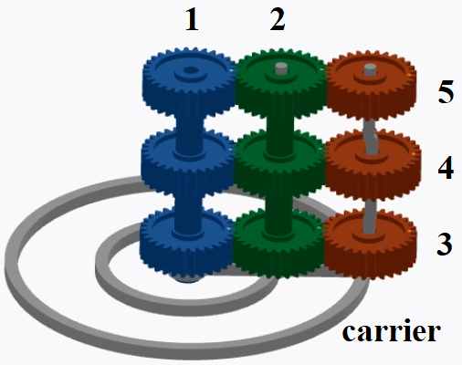
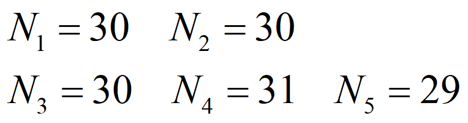
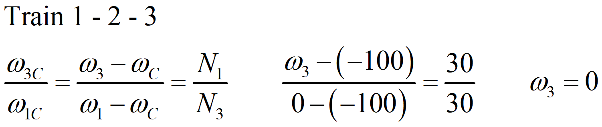

This article summarizes the historical origin of James Ferguson's mechanical paradox, shows how to assemble the mechanism in Engrenarium and explains why three gears, driven by the same set, can rotate in different directions or even remain stationary.
Historical origin
The video description informs that the conversation that gave rise to the mechanism was adapted from the book Wheelwright of the Heavens: The Life and Work of James Ferguson, FRS, by John R. Millburn. According to this account, Ferguson was at a meeting in which a watchmaker treated as impossible what he considered contrary to reason.
Instead of responding in the abstract realm of discussion, Ferguson took the argument to the watchmaker's craft: cogwheels. He proposed a machine in which a wide wheel would drive three thin wheels on the same axle, but with a result that contradicted immediate intuition. One of them would rotate in one direction, another in the opposite direction, and the third would not rotate.
To a watchmaker, the claim seemed impossible, as experience with pairs of gears suggested that geared wheels should follow predictable directions. Ferguson then built the device and presented it to the group. The observed effect showed that the apparent paradox was not in the gears themselves, but in the incomplete reading of relative motion.
Mechanism idea
The paradox uses three gear trains mounted on the same carrier. They share the same input gear and the same idler gear, but end in three final gears with slightly different tooth counts.

The secret is to change just one tooth on the final gears. With carrier fixed, they all rotate in the same direction, at almost the same speed. When the input gear is fixed and the carrier starts to rotate, the rotation of the carrier subtracts a common portion of the movement. Because the three speeds were slightly different, subtraction produces three distinct results.
Assembly data
In the assembly used in the video and caption, gears 1 and 2 have 30 teeth. The final three gears have 30, 31 and 29 teeth respectively.
| Element | Tooth count | Function |
|---|---|---|
| Gear 1 | \(N_1=30\) | Input gear, treated as sun gear in the model. |
| Gear 2 | \(N_2=30\) | Intermediate gear common to all three trains. |
| Gear 3 | \(N_3=30\) | Exit that remains stuck in the paradoxical essay. |
| Gear 4 | \(N_4=31\) | Output that rotates clockwise. |
| Gear 5 | \(N_5=29\) | Output that rotates counterclockwise. |

How to assemble it in Engrenarium
The assembly can be done as three planetary systems in parallel, all with the same carrier. In each system there is a series train formed by gear 1, gear 2 and a final gear.
- Create the first system with two planet gears in series, using \(N_1=30\), \(N_2=30\) and \(N_3=30\).
- Create two more similar systems, but change the final gear to \(N_4=31\) on the second and \(N_5=29\) on the third.
- Couple the three gears 1 so that they behave as a single input.
- Couple the three carriers of planetary systems.
- Couple the three gears 2 together, keeping them as a common idler gear.
- Leave gears 3, 4 and 5 free, as they are the outputs that show the paradox.
- To reproduce the main assay, define \(\omega_1=0\) and then apply \(\omega_C=-100\,\text{rpm}\) to carrier.
Before activating the mechanism, visually align the final gears. This makes it easier to observe that, after the carrier moves, one output does not rotate, one rotates clockwise and the other rotates counterclockwise.
How it works
The equation for a planetary gear train can be written using velocities relative to the carrier \(C\). For each train \(1-2-k\), where \(k\) can be 3, 4 or 5, it is worth:
Isolating the speed of the final gear, we obtain:
First, consider carrier fixed, with \(\omega_C=0\), and gear 1 rotating \(100\,\text{rpm}\) counterclockwise. The speeds of the three outputs are:
| Exit | Calculation | Result |
|---|---|---|
| Gear 3 | \(100\cdot 30/30\) | \(100.00\,\text{rpm}\) |
| Gear 4 | \(100\cdot 30/31\) | \(96.77\,\text{rpm}\) |
| Gear 5 | \(100\cdot 30/29\) | \(103.45\,\text{rpm}\) |
The three gears rotate in the same direction, but with small differences in speed. The difference of one tooth is enough to separate the results.
In the paradoxical test, gear 1 remains stationary, \(\omega_1=0\), and carrier rotates clockwise, \(\omega_C=-100\,\text{rpm}\). Replacing in the same expression:
| Exit | Calculation | Interpretation |
|---|---|---|
| Gear 3 | \(-100+100\cdot30/30=0\) | Does not rotate. |
| Gear 4 | \(-100+100\cdot30/31=-3.23\) | Rotates clockwise. |
| Gear 5 | \(-100+100\cdot30/29=3.45\) | Rotates counterclockwise. |

Why does it seem paradoxical
The initial intuition only considers direct action between gears. In this reading, if one wheel drives another, a reversal of direction is expected with each gear. Ferguson's mechanism, however, is planetary: the absolute speeds are the sum between the relative movement of the train and the movement of the carrier.
When the carrier rotates, it shifts the reference frame of all final gears. The gear with 30 teeth has its relative rotation exactly canceled. The gear with 31 teeth is slightly below this cancellation and starts to rotate clockwise. The gear with 29 teeth is slightly above and rotates counterclockwise.
The paradox, therefore, does not violate the kinematics of the gears. It shows that mechanisms with moving carrier require analysis by relative speeds before any conclusion about absolute movement can be made.